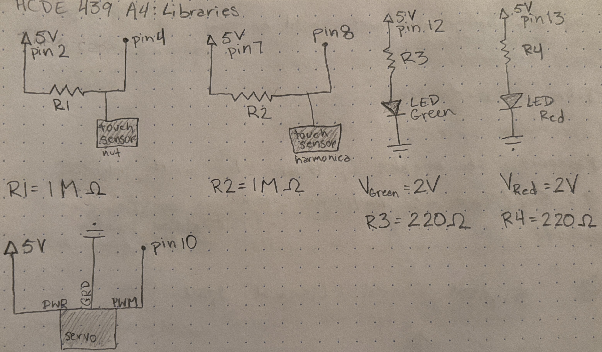
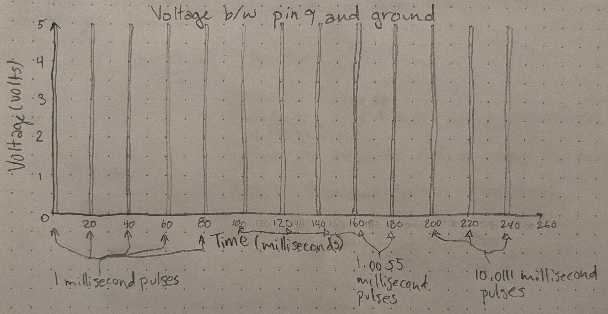

Vivian's Assignment 4!
Here is all the documentation for assignment 4!
Schematic

Resistor choices
The two LED circuits are mathematically equivalent so I knew R3 and R4 would be equivalent. I calculated the voltage drop across R3 would be 3V (5V-2V=3V), based on Kirchoff’s Voltage Law. I decided I wanted the current to be 20mA because that is ideal for operating the LEDs. Now I know IR = 0.02 A and VR = 3V so I can use Ohm’s law to find that RG = 150Ω (3V/0.02A = 150). Based on the available resistors in my kit I will use 220Ω resistors to keep the current within the LEDs’ max current limit.
I chose a large resistance (1 megaohm) for the capacitive touch sensors because larger resistance makes the sensor more sensitive. At 1 MΩ the sensor responds when it is physically touched, but not when hovered over. If the resistance were greater it would take longer to respond because the capacitor would discharge slower.

Code
//incorporates functions and types from the capacitive sensor library
#include
//incorporates functions and types from the capacitive sensor library
#include
//defines the nut as a capacitive sensor with pin 4 as the sensor and pin 2 as the power source
CapacitiveSensor nut = CapacitiveSensor(2,4);
//defines the harmonica as a capacitive sensor with pin 8 as the sensor and pin 7 as the power source
CapacitiveSensor harmonica = CapacitiveSensor(7,8);
//gives 12 the variable name Green to use to refer to pin 12
int Green = 12;
//gives 13 the variable name Red to use to refer to pin 13
int Red = 13;
//gives 10 the variable name ServoPin to use to refer to pin 10
int ServoPin = 10;
//establishes a servo object called myservo
Servo myservo;
//code run once when Arduino is first powered on
void setup()
{
//establishes the serial communication speed
Serial.begin(9600);
// attaches the servo on pin 10 to the Servo object
myservo.attach(ServoPin);
}
//code looped through while Arduino is powered on
void loop()
{
//stores the milliseconds at current sample to compare to test how long each read takes
long start = millis();
//stores a value representing the capacitance of the nut sensor averaged over 30 samples
long nutRead = nut.capacitiveSensor(30);
//stores a value representing the capacitance of the harmonica sensor averaged over 30 samples
long harmonicaRead = harmonica.capacitiveSensor(30);
//prints the number of milliseconds it takes to take a read
Serial.print(millis() - start);
//prints a tab character in the serial window to separate columns
Serial.print("\t");
//prints the value representing the capacitance of the nut system
Serial.print(nutRead);
//prints a tab character in the serial window to separate columns
Serial.print("\t");
//prints the value representing the capacitance of the harmonica system
Serial.println(harmonicaRead);
//delays data to the serial port for readibility
delay(10);
//checks if the representative capacitance value of the nut system is greater than 250 (it is being touched)
if (nutRead > 250){
//turns on the Green LED
digitalWrite(Green, HIGH);
//turns the servo to its 180 degree position (toward the green LED)
myservo.write(180);
//checks that neither the harmonica or nut are being touched
}else if (harmonicaRead < 250){
//turns the green LED off
digitalWrite(Green, LOW);
//sets the servo to its neutral position (90 degrees)
myservo.write(90);
}
//checks if the representative capacitance value of the harmonica system is greater than 250 (it is being touched)
if (harmonicaRead > 250){
//turns on the red LED
digitalWrite(Red, HIGH);
//turns the servo to its 0 degree position (toward the red LED)
myservo.write(0);
//checks that neither the harmonica or nut are being touched
}else if (nutRead < 250){
//turns the red LED off
digitalWrite(Red, LOW);
//sets the servo to its neutral position (90 degrees)
myservo.write(90);
}
}
Video
Questions
-

-
If the input device gives erroneous reading 1% of the time, you can set reasonable limits on the value and replace outliers with the most recent valid reading. For example:
long harmonicaRead = harmonica.capacitiveSensor(30); if(harmonicaRead > 3000 || harmonicaRead < 15){ harmonicaRead = prevHarmonicaRead; } -
If the value is randomly deviating from the true measurement by 10% you can increase the samples taken to constitute a read. This will smooth the data more so the 10% deviations are not as noticeable in the data. For example use:
Instead of:long harmonicaRead = harmonica.capacitiveSensor(100);long harmonicaRead = harmonica.capacitiveSensor(30);